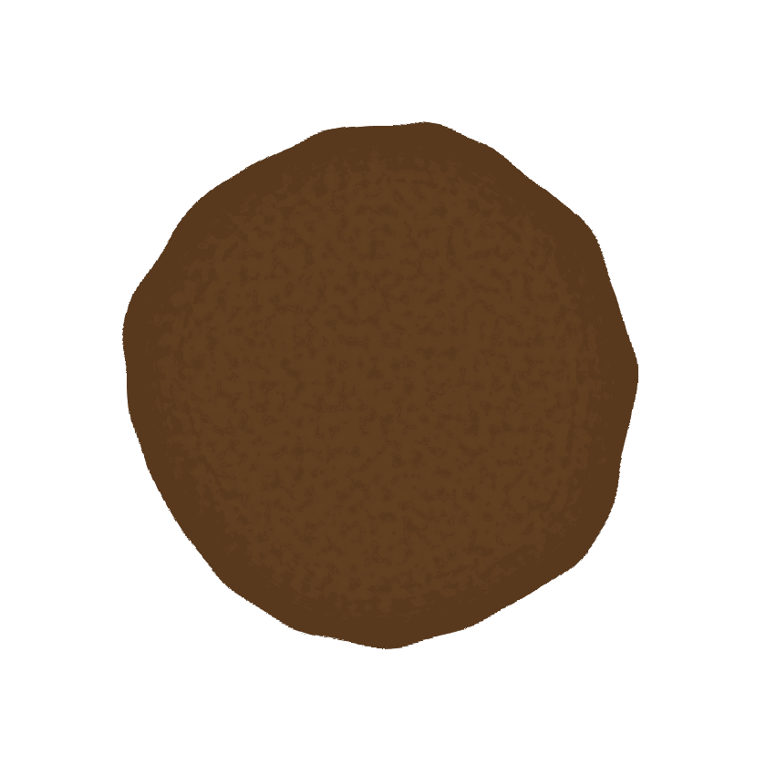
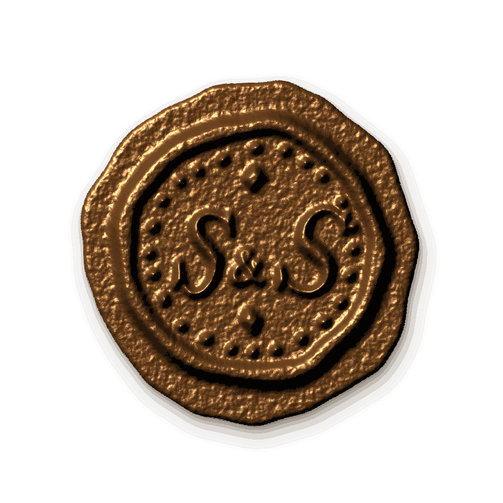

넘어가기


Wedding Invitation
우리의 삶을 함께 써 주신 당신께
이산하
그리고
송시야
2026년 10월 9일 금요일
오후 6시 30분
더채플앳청담
3층 커티지홀
오시는 길
연락처
마음 전하는 곳
이름·문장
고운바탕 (Gowun Batang)
나눔명조 (Nanum Myeongjo)
노토 세리프 KR
함렛 (Hahmlet)
송명 (Song Myung)
디필레이아 (Diphylleia)
그랑디플로라 (Grandiflora One)
나눔손글씨 펜 (Nanum Pen Script)
나눔손글씨 붓 (Nanum Brush Script)
개구 (Gaegu)
하이멜로디 (Hi Melody)
감자꽃 (Gamja Flower)
노토 산스 KR
본문
노토 산스 KR (Noto Sans KR)
고운바탕 (Gowun Batang)
나눔명조 (Nanum Myeongjo)
노토 세리프 KR
함렛 (Hahmlet)
디필레이아 (Diphylleia)
프리텐다드 (Pretendard)
고운돋움 (Gowun Dodum)
안내
노토 산스 KR (Noto Sans KR)
고운돋움 (Gowun Dodum)
프리텐다드 (Pretendard)
나눔고딕 (Nanum Gothic)
IBM Plex Sans KR
패널 닫기